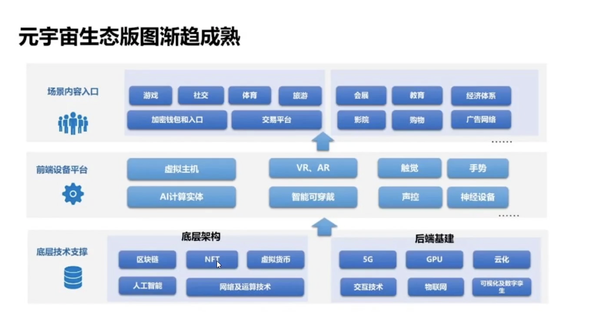

元宇宙 & 虚拟现实
1 前言
读完全文，带你了解什么是元宇宙？元宇宙的现状如何？带来的产业生态和问题在哪？
2 元宇宙的背景
元宇宙 被现在国内外互联网吹捧的神乎其微，被誉为“下一代”的互联网，面对“即将到来”的元宇宙，像 Facebook（Meta）、微软、腾讯、阿里、字节都纷纷布局
元宇宙的概念的提出：
最初来自科幻作家史蒂芬文森 1992 年创作的科幻小说《雪崩》，在共享的线上世界，使用者能够互动，甚至在虚拟世界中生活、工作。故事中创造了一个平行于现实世界的网络世界，每在现实世界中地理位置彼此隔绝的人们通过各自的 “化身” 进行交流娱乐。
2020 年全球疫情期间，美国加州大学伯克利分校，他们的学生在沙盘游戏《我的世界》中模拟了毕业场景，把校园的建筑和场景搬到线上，以虚拟的方式完成了毕业典礼。
美国著名的歌手Travis Scott在游戏《堡垒之夜》中举办了一场虚拟演唱会。在演唱会上，这位歌手以一个巨大的虚拟形象穿梭在游戏里的各个场景，和玩家们频繁互动。你猜有多少人参加了这场演唱会？1230 万！ 没错，刷新了《堡垒之夜》这个游戏同时在线人数的历史记录。
2020 年是人类社会虚拟化的临界点，为 2021 年成为元宇宙元年做了铺垫。一方面疫情加速了社会虚拟化，在新冠肺炎疫情防控措施下，全社会上网时长大幅增长，“宅经济” 快速发展； 另一方面，线上生活由原先短时期的例外状态变为常态，由现实世界的补充变成了与现实世界的平行世界，人类现实生活开始大规模向虚拟世界迁移，人类成为现实与数字的“两栖动物”。
3 什么是元宇宙？
5G、6G
虚拟界面：AR 、VR 、MR 、 机器人 、脑机接口
云计算
区块链
人工智能
4 元宇宙产业生态和存在问题

“元宇宙”沉浸离不开虚拟现实
3D 沉浸场景离不开虚拟现实，虚拟现实、增强现实能有效提高沉浸感受，提高体验
“元宇宙” 存在的问题
因为是全民参与，需要法治的健全；
资金安全，NFT数字资产的识别；
个人信息丢失将无法找回，对人的要求更高；
当前社会的文化和伦理的冲击
区块链大量的计算，对能源消耗、硬件设备的要求提高
5 我们如何参与元宇宙？
Unity3D 引擎开发。。。